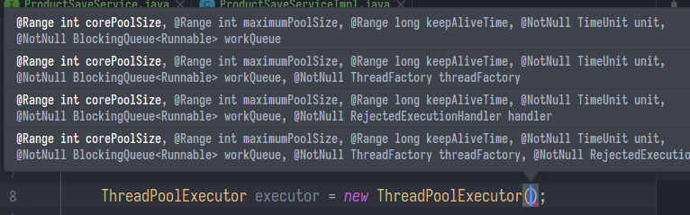
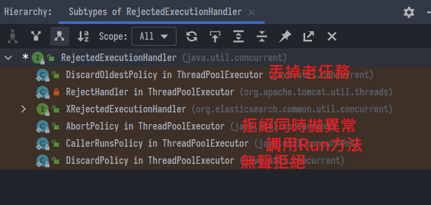
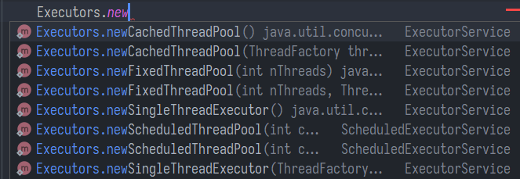

線程池與CompletableFuture異步編排
SpringBoot微服務項目筆記-14
多線程
初始化線程的4種方式
- 繼承 Thread
- 實現 Runnable接口
- 實現 Callable接口 + FutureTask（可以拿到返回結果，可以處理異常）
- 線程池
區別
- 1、2不能得到返回值。3可以獲取返回值
- 1、2、3都不能控制資源
- 4可以控制資源，性能穩定，不會一下子所有線程一起運行
- 實際開發中，只用線程池，因為高併發狀態開啓了n個線程，會直接耗盡資源
線程池的優勢
- 降低資源的消耗: 省得在那創了又刪，刪了又創
- 提高響應速度: 已經在池子那等了，來活就幹
- 提高線程的可管理性: 例如系統中可以創建兩個線程池，核心線程池、非核心線程池，有需要時可以關閉非核心線程池釋放記憶體資源
- 就像公司分兩部門，壓力大就把非核心的部門關了
手動創建線程池

- 可以
new ThreadPoolExecutor(參數)手動創建線程池，七大參數:
// ThreadPoolExecutor.java 原始碼
corePoolSize – the number of threads to keep in the pool, even if they are idle, unless allowCoreThreadTimeOut is set
maximumPoolSize – the maximum number of threads to allow in the pool
keepAliveTime – when the number of threads is greater than the core, this is the maximum time that excess idle threads will wait for new tasks before terminating.
unit – the time unit for the keepAliveTime argument
workQueue – the queue to use for holding tasks before they are executed. This queue will hold only the Runnable tasks submitted by the execute method.
threadFactory – the factory to use when the executor creates a new thread
handler – the handler to use when execution is blocked because the thread bounds and queue capacities are reached
- corePoolSize: 元老級員工，即使摸魚也不會被解雇
- maximumPoolSize: 最大招募數量，用於控制資源
- keepAliveTime: 臨時員工摸魚多久就把他們解雇
- unit: 計算摸魚時間的單位
- workQueue: 阻塞隊列，任務太多暫時沒員工可分配了，新來的任務排隊的地方
- threadFactory: 創建執行緒的工廠，給員工命名的人資
- handler: 如果隊列滿了，執行指定的拒絕策略
- RejectedExecutionHandler 有以下幾種
- 預設是AbortPolicy，跟客戶說公司幹不過來請他找別家
- CallerRunsPolicy類似開小灶，硬幫你執行

順序
- 創建線程池，懶加載核心線程(任務來了就招募核心員工)
- 核心線程滿放入阻塞隊列(員工不夠用，請任務先排隊，馬上招臨時工)
- 創建線程，直到達到maximumPoolSize
- 如果傳入了拒絕策略會執行，否則拋出異常
範例
- 一個線程池 core = 7, max = 20, queue = 50 當100個併發進來
- 7個任務立即被核心執行，50個進隊列，然後創建13個線程執行13個任務。剩下30個執行拒絕策略
線程池execute和submit區別
- execute: 參數只能是Runnable，沒有返回值
- submit: 參數可以是Runnable、Callable，返回值是FutureTask
四種線程池模板

- CachedThreadPool: 核心線程數是0，如果空閒會回收所有線程。全員派遣公司，沒事幹就裁員
- FixedThreadPool: 核心線程數 = 最大線程數。佛心公司，永不拋棄員工，但占用就多、不靈活
- ScheduledThreadPool: 定時任務線程池，多久之後執行，可設定核心線程數、最大線程數是Integer.Max。限定營業時間的公司
- SingleThreadPool: 核心與最大都只有一個，後台從隊列中獲取任務。個人接案公司，一件一件幹
CompletableFuture 異步編排
就像為了做咖哩飯，白米在電鍋蒸，紅蘿蔔難熟提前丟去煮，我還能一邊切馬鈴薯。類似vue的Promise也是為了異步任務
- 因為要實現Runnable，所以幾乎都是用lambda表達式來縮寫，省得寫好幾行
指派任務
把紅蘿蔔丟去鍋裡煮
- CompletableFuture提供了四個靜態方法來創建一個異步操作
public static Completab1eFuture<Void> runAsync(Runnable runnable)
public static completableFuturecVoid> runAsync(Runnable runnable，Executor executor)
public static <U> CompletableFuture<U> supplyAsync(Supplier<U>supplier)
public static <U> CompletableFuturecU> supplyAsync(Supplier<U> supplier，Executor executor)
- 可以傳入自定義線程池，否則使用預設線程池
- runXXX沒有返回結果，supplyXxx有返回結果
- 用
future.get()獲取結果
- 用
public class ThreadTest {
public static ExecutorService executor = Executors.newFixedThreadPool(10);
public static void main(String[] args) throws ExecutionException, InterruptedException {
System.out.println("main start ....");
CompletableFuture<Integer> future = CompletableFuture.supplyAsync(ThreadTest::asyncFunction, executor);
System.out.println("main end.... result: " + future.get());
}
public static int asyncFunction() {
System.out.println("執行任務 1+1");
return 1 + 1;
}
}
接收任務返回值
煮了紅蘿蔔之後要幹嘛
public completableFuture<T> whencomplete(BiConsumer<? super T, ? super Throwable> action);
public completableFuture<T> whenCompleteAsync(BiConsumer<? super T, ? super Throwable> action，Executor executor);
public completableFuture<T> exceptionally(Function<Throwable, ? extends T> fn);
- whenComplete可以處理正常結果和感知異常，exceptionally特別用於處理異常情況
- whenComplete和whenCompleteAsync的區別:
- whenComplete: 是執行當前任務的線程執行繼續執行whenComplete的任務
- whenCompleteAsync: 是執行把 whenCompleteAsync這個任務繼續提交給線程池來進行執行
- 方法不以Async結尾，意味着Action使用相同的線程執行，而Async可能會使用其他線程執行（如果是使用相同的線程池，也可能會被同一個線程選中執行)
- 就是這個鍋煮完這批紅蘿蔔要不要換個鍋
public class ThreadTest {
public static ExecutorService executor = Executors.newFixedThreadPool(10);
public static void main(String[] args) throws ExecutionException, InterruptedException {
System.out.println("main start ...");
CompletableFuture<String> future = CompletableFuture
.supplyAsync(ThreadTest::asyncFunction, executor)
.whenComplete(ThreadTest::accept)
.exceptionally(ThreadTest::apply);
System.out.println("main end... 返回值：" + future.get());
}
// 指派任務
public static String asyncFunction() {
System.out.println("線程池執行任務 煮紅蘿蔔");
int i = 10 / 0; // 讓異常發生
return "煮好了";
}
// 指派任務完成後要幹的事
public static void accept(String result, Throwable exception) {
System.out.println("獲取任務1的結果：" + result);
System.out.println("獲取任務1的異常：" + exception);
}
// 異常時要返回的
public static String apply(Throwable exception) {
System.out.println("紅蘿蔔異常" + exception);
return "紅蘿蔔沒熟需要重煮";
}
}
handle方法
whenComplete只能感知異常，他只能跟你說結果沒熟，但是不能對沒熟的紅蘿蔔怎樣，太弱了所以通常不用。通常是用handle
public class ThreadTest {
public static ExecutorService executor = Executors.newFixedThreadPool(10);
public static void main(String[] args) throws ExecutionException, InterruptedException {
System.out.println("main start ...");
CompletableFuture<String> future = CompletableFuture
.supplyAsync(ThreadTest::asyncFunction, executor)
.whenComplete(ThreadTest::accept)
.exceptionally(ThreadTest::apply)
.handle(ThreadTest::handle);
System.out.println("main end... 返回值：" + future.get());
}
// 指派任務
public static String asyncFunction() {
System.out.println("線程池執行任務 煮紅蘿蔔");
int i = 10 / 0; // 讓異常發生
return "煮好了";
}
// 指派任務完成後要幹的事
public static void accept(String result, Throwable exception) {
System.out.println("獲取任務1的結果：" + result);
System.out.println("獲取任務1的異常：" + exception);
}
// 異常時要返回的
public static String apply(Throwable exception) {
System.out.println("紅蘿蔔異常" + exception);
return "紅蘿蔔沒熟需要重煮";
}
public static String handle(String result, Throwable exception) {
System.out.println("獲取任務1的結果：" + result);
System.out.println("獲取任務1的異常：" + exception);
System.out.println("異常不會傳播，前面調用exceptionally方法處理了異常");
return result + "，並且基於任務1的結果，把鍋裡的東西撈出來";
}
}
串行化
handle是用於處理a方法的結果，接著執行b方法要用串行
public Completionstage<Void> thenRun(Runnable action);
public completionstage<Void> thenAccept(Consumer<? super T> action);
public <U> CompletableFuturecU> thenApply(Function<? super T,? extends U> fn)
- thenRun：繼續執行，不接受上一個任務的返回結果
- thenAccept：繼續執行，接受上一個任務的返回結果
- thenApply：繼續執行，接受上一任務的返回結果，並且自己有返回值
- 他們也都有Async版本，跟前面一樣就不多說
public static void main(String[] args) throws ExecutionException, InterruptedException {
System.out.println("main start ...");
CompletableFuture<String> future = CompletableFuture
.supplyAsync(ThreadTest::asyncFunction, executor)
.whenComplete(ThreadTest::accept)
.exceptionally(ThreadTest::apply)
.handle(ThreadTest::handle)
.thenApply(ThreadTest::thenApply);
System.out.println("main end... 返回值：" + future.get());
}
public static String thenApply(String result) {
System.out.println("任務2啓動");
System.out.println("任務2可以獲取任務1的結果：" + result);
return "現在換煮馬鈴薯";
}
彙整任務
現在米飯、咖哩、紅蘿蔔、馬鈴薯都煮了，要來擺盤
兩個任務必須都完成
public <U,V> CompletableFuture<V> thenCombine(CompletionStage<? extends U> other, BiFunction<? super T,? super U,? extends V> fn);
public <U> CompletableFuture<Void> thenAcceptBoth(CompletionStage<? extends U> other, BiConsumer<? super T, ? super U> action);
public CompletableFuture<Void> runAfterBoth(CompletionStage<?> other, Runnable action);
- thenCombine: 獲取兩個future的返回結果，並返回當前任務的返回值
- thenAcceptBoth: 獲取兩個future任務的返回結果，然後處理任務，沒有返回值
- runAfterBoth: 不需要獲取future的結果，只需兩個future處理完任務後，處理該任務
public static void main(String[] args) throws ExecutionException, InterruptedException {
System.out.println("main start ...");
CompletableFuture<String> future1 = CompletableFuture.supplyAsync(() -> {
System.out.println("任務1 煮紅蘿蔔start..");
System.out.println("任務1 end..");
return "紅蘿蔔煮好了";
});
CompletableFuture<String> future2 = CompletableFuture.supplyAsync(() -> {
System.out.println("任務2 煮馬鈴薯start..");
System.out.println("任務2 end..");
return "馬鈴薯煮好了";
});
CompletableFuture<String> future3 = future1.thenCombineAsync(future2, (result1, result2) -> {
return "任務3 組合前兩個任務的返回值返回: " + result1 + "且" + result2;
}, executor);
System.out.println("main end... 返回值：" + future3.get());
}
二者中有一個完成
應該很少用到，了解就好
- applyToEither: 帶參有返回值，能獲取前面任務的結果(成功的那個)，自己有返回結果
- acceptEither: 帶參無返回值，能獲取前面任務的結果
- runAfterEither: 無參無返回值，不能獲取前面任務的結果，自己也沒有返回結果(要你何用)
全完成或至少一個
-
都是CompletableFuture的靜態方法
-
allOf
-
anyOf
-
-
配合
.get()可以讓線程阻塞
public class ThreadTest {
public static ExecutorService executor = Executors.newFixedThreadPool(10);
public static void main(String[] args) throws ExecutionException, InterruptedException {
System.out.println("main start ...");
CompletableFuture<String> future1 = CompletableFuture.supplyAsync(() -> {
System.out.println("任務1 煮紅蘿蔔start..");
try {
Thread.sleep(3000);
} catch (InterruptedException e) {
e.printStackTrace();
}
System.out.println("任務1 end..");
return "紅蘿蔔煮好了";
});
CompletableFuture<String> future2 = CompletableFuture.supplyAsync(() -> {
System.out.println("任務2 煮馬鈴薯start..");
System.out.println("任務2 end..");
return "馬鈴薯煮好了";
});
CompletableFuture<String> future3 = future1.thenCombineAsync(future2, (result1, result2) -> {
System.out.println("任務3 組合配菜，需要配菜都煮熟");
try {
Thread.sleep(3000);
} catch (InterruptedException e) {
e.printStackTrace();
}
System.out.println("任務3 end..");
return "配菜完成";
}, executor);
CompletableFuture<Void> all = CompletableFuture.allOf(future1, future2, future3);
all.get(); // 使方法阻塞，不阻塞若有人超時，主線程會提前關閉
System.out.println(future1.get() + future2.get() + future3.get());
System.out.println("main end...");
}
}
小結
- 實際都用線程池，省資源、反應快、好控制
- 線程池七參數:
- core: 核心員工，創了就不滅
- max: 最大員工數量(含臨時工)
- factory: 工廠，人資
- aliveTime: 臨時工過期時間
- unit: 過期時間單位
- queue: 任務排隊處
- handler: 拒絕策略
- 併發進來，核心接活、去排隊、擴大池子臨時工接活直到max，超出的依照拒絕策略辦事
- CompletableFuture:
- Accept就是純接收結果
- Apply是接收結果，且自己也有結果
- Run就是不管上一個結果，現在做這件事
get()方法可以讓線程阻塞
上次修改於 2022-01-31